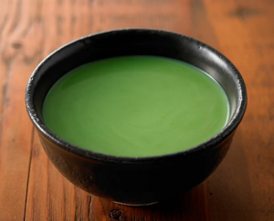
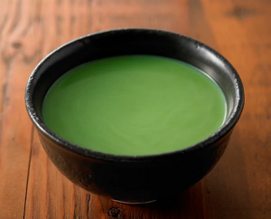

Matcha Latte

Ingredients: * 1 tsp of matcha powder * 1 tbsp hot water * Cup of milk (any type: regular, coconut, almond)
Optional * Lemon, cinnamon, turmeric, ginger, honey
How to make it:
- Heat it up in the micro
- Make it foamy with frother

Ingredients: * 1 tsp of matcha powder * 1 tbsp hot water * Cup of milk (any type: regular, coconut, almond)
Optional * Lemon, cinnamon, turmeric, ginger, honey
How to make it: